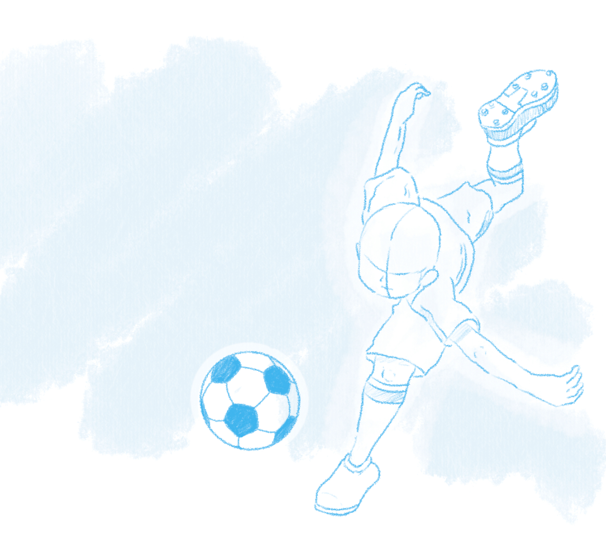
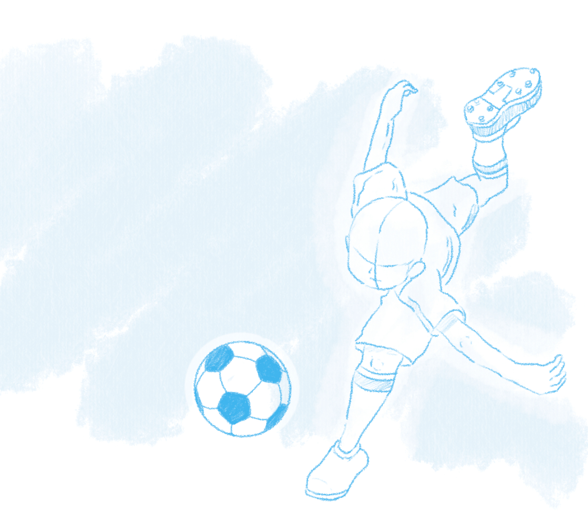

Historia
En esta tercera entrega de la saga, nos encontramos inmediatamente después de los hechos acontecidos en la anterior edición, nuestros protagonistas afrontan el mundial con muchas ganas de ganar y de disfrutar del fútbol de todo el mundo.
Para ello primero deben clasificarse a la fase final mediante la victoria en la clasificación asiática. Donde se enfrentarán a equipos como Australia, Catar, Corea...
Después de la clasificación afrontarán una fase de grupos seguida de las semifinales y la final, donde jugarán contra selecciones de todo el mundo como Inglaterra, Italia, Argentina entre otras.
Gameplay
El núcleo de gameplay son los partidos, plagados de técnicas especiales que añaden gran profundidad al fútbol y dan lugar a estrategias novedosas. Estos partidos funcionan como "combates", que pueden suceder en momentos clave de la historia o mientras recorres las distintas localizaciones controlando a Mark.
Supera las distintas fases del torneo y álzate con el título de campeón guiando a tus jugadores hacia la victoria. ¡Entrena, descubre nuevas supertécnicas y sigue adelante!
Características
Viaja tanto por Japón como por el archipiélago de Liocott explorando las áreas de cada país clasificado al torneo Fútbol Frontier Internacional y juega en el gran estadio central contra las mejores selecciones del mundo.
Antes de jugar un partido importante entrena y juega pachangas contra los fans de tu equipo u otros equipos. Estas pachangas son encuentros aleatorios y pueden tener distintas reglas. En esencia, son pequeños partidos de 4 versus 4 de corta duración (alrededor de 2 minutos como máximo).
Cuando sea el momento de jugar un partido importante la preparación es crucial, elige qué jugadores saldrán a jugar y cuáles se quedan en el banquillo. Coloca a cada jugador en la posición que creas más conveniente y ¡adelante!.
Dentro de un partido, podrás mover a tus jugadores y pasar el balón de la forma que quieras usando el lápiz táctil. Cuando dos jugadores choquen o cuando alguien tire a puerta, sucederá un enfrentamiento: el tiempo se detendrá y deberás elegir qué supertécnica usar acorde a la situación. Presentamos también las Supertácticas, jugadas especiales que realiza todo el equipo junto y pueden tener varios propósitos: defender o atacar.
Personajes
Durante el transcurso de la historia te enfrentarás contra las mejores selecciones del mundo, donde después de terminar la historia podrás fichar para que te acompañen en el equipo y poder manejarles. Jugadores excepcionales como los capitanes de selecciones como Edgar Partinus, Paolo Bianchi, Héctor Helio, entre otros. Los podrás reclutar mediante un sistema de fichaje en el que tendrás que batirle en una pachanga para que se una a tu equipo.
Además de esto, cuando estés jugando la historia podrás fichar a jugadores a los que te enfrentes en las pachangas de todo el mundo, mediante el mapa de contactos o las máquinas expendedoras que se encuentran repartidas por el mundo.
En este juego podemos encontrar también a jugadores de las anteriores entregas y serán fichables también después de terminar la historia mediante las máquinas antes mencionadas.
Arte del juego
Inazuma Eleven 3 ofrece un apartado artístico vivo, llamativo a la vez que intenso y lleno de color, gracias a su constante uso de colores variados y contraste entre luces y sombras.
Tanto en la portada, en los diseños y en los mismos conceptos iniciales, se puede apreciar un dinamismo y encuadre que refleja la intensidad y acción con la que se vive el juego.
Además, el gameplay no se queda atrás; el diseño 3D del juego otorga al jugador mayor realismo, de modo que es él quien siente que está siendo partícipe de cada jugada y de cada golpe. La expresividad en las caras, los efectos visuales, sumados a los fondos elaborados, crean una experiencia placentera a la vez que frenética que se queda grabada en la mente durante cada partido.
A continuación algunas imágenes de concepr arts:
 

Música
El aclamado compositor de videojuegos Yasunori Mitsuda vuelve a deleitarnos con sus obras en esta nueva entrega de la saga. Mitsuda ha trabajado en la banda sonora de otros grandes proyectos, tales como "Chrono Trigger" (de Square), "Xenoblade Chronicles" (de Monolith Soft) y muchos más.
Estamos muy agradecidos de volver a trabajar con la persona que compuso la banda sonora de los anteriores juegos de Inazuma Eleven.
Equipo
Somos una pequeña empresa dedicada al diseño y desarrollo de videojuegos, fundada recientemente en Madrid, compuesta por seis integrantes y trabajando por cuenta propia en proyectos como este para ofrecer al mundo nuestra creatividad plasmada en diversión para todos.
Hypernova Games se compone de los siguientes integrantes con sus respectivos cargos: arte, visuales y diseños del juego, a mano de Lucas; Andrés y Raúl, encargados de la redacción y guion narrativo; Joaquim, programador principal del videojuego y página web; David, a cargo de la banda sonora, efectos de sonido y música del tráiler; y Samuel, encargado de la imagen principal y marketing.
Nuestro pequeño equipo de desarrollo ha trabajado junto a la maravillosa empresa "Level-5", empresa japonesa fundada por Akihiro Hino en 1998 y líder y directora de este proyecto.
Esta misma empresa es famosa por desarrollar juegos como la propia saga de Inazuma Eleven además de otras fabulosas sagas como Yo-kai Watch, el Profesor Layton...